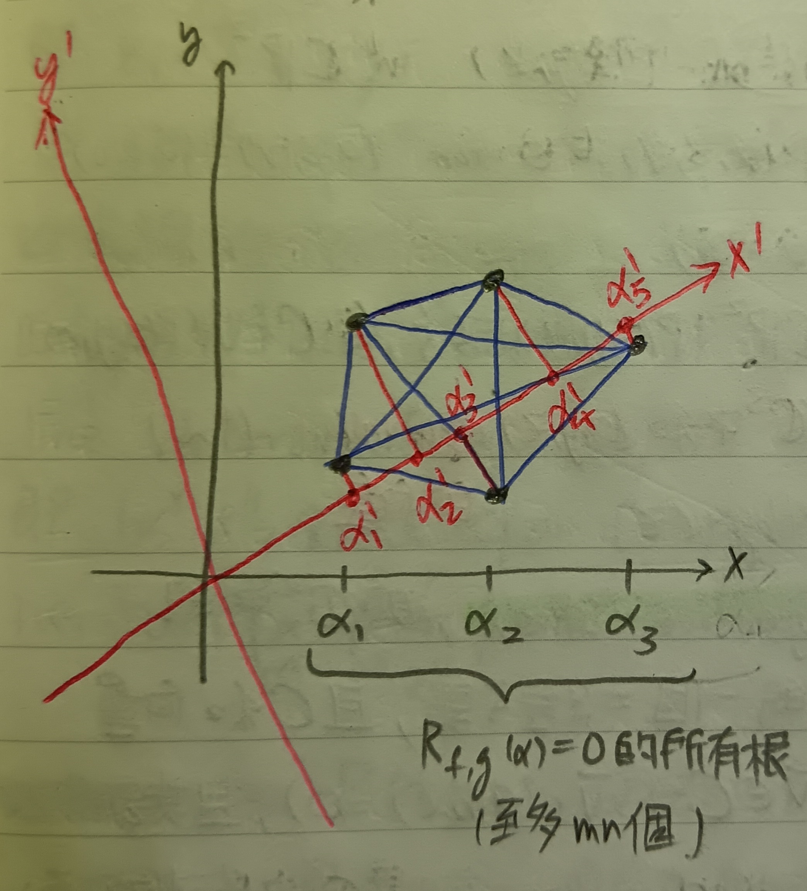

這份筆記是關於貝祖定理的證明。
這裡的行與列依循的是台灣的翻譯習慣，即行對應到英文的Column，而列對應到英文的Row。
結式
定義 1：多項式環 (Polynomial Ring)
給定體\(\mathbb{F}\)，我們稱所有係數在\(F\)中的多項式構成的集合為\(\mathbb{F}\)上的多項式環，記為\(\mathbb{F}[x]\)。
註記 1-1
這裡先接受我們可以在\(\mathbb{F}[x]\)上做輾轉相除法(詳細細節可以參考[這裡])。
引理 2：高斯引理 (Gauss' Lemma)
給定多項式\(f,g\in\mathbb{F}[x]\)，其中\(f,g\neq 0\)。則\(f,g\)有非常數公因式 iff. 存在\(0\neq u,v\in\mathbb{F}[x]\)滿足\(\mbox{deg}(u)<\mbox{deg}(g)\), \(\mbox{deg}(v)<\mbox{deg}(f)\)且\(uf+vg=0\)。
證明：我們分成兩個部分證明。
「\(\Rightarrow\)」：令\(d\in\mathbb{F}[x]\)是\(f,g\)的非常數公因式。則令\(u=g/d\), \(v=-f/d\)。於是有 \[
uf+vg=\left(\frac{g}{d}\right)f+\left(-\frac{f}{d}\right)g=0
\] 且顯然有\(\mbox{deg}(u)<\mbox{deg}(g)\), \(\mbox{deg}(v)<\mbox{deg}(f)\)。
「\(\Leftarrow\)」：假設存在滿足條件的\(u,v\)，但\(f,g\)沒有非常數公因式。則使用輾轉相除法可知應存在\(p,q\in\mathbb{F}[x]\)使得\(pf+qg=1\)。故 \[
u=u(pf+qg)=(-vg)p+uqg=(-vp+uq)g
\] 即\(g|u\)。這與\(\mbox{deg}(u)<\mbox{deg}(g)\)的假設矛盾，故\(f,g\)應有非常數公因式。QED
定義 3：結式 (Resultant)
給定多項式\(f,g\in\mathbb{F}[x]\)，其中 \[ f(x)=a_0+a_1x+\cdots+a_mx^m, g(x)=b_0+b_1x+\cdots+b_nx^n \] 考慮\((m+n)\times(m+n)\)矩陣 \[ R=\left( \begin{array}{ccccccc} a_0 & a_1 & \cdots & a_m & 0 & \cdots & 0\\ 0 & a_0 & a_1 & \cdots & a_m & 0 & \cdots\\ \vdots & \ddots & \ddots & \ddots & \ddots & \ddots & \vdots\\ 0 & \cdots & 0 & a_0 & a_1 & \cdots & a_m\\ b_0 & b_1 & \cdots & b_n & 0 & \cdots & 0\\ 0 & b_0 & b_1 & \cdots & b_n & 0 & \cdots\\ \vdots & \ddots & \ddots & \ddots & \ddots & \ddots & \vdots\\ 0 & \cdots & 0 & b_0 & b_1 & \cdots & b_n \end{array} \right) \] 則我們將與\(f,g\)相關的結式定義為\(R_{f,g}=\det(R)\)。
性質 4
給定多項式\(f,g\in\mathbb{F}[x]\)，其中 \[
f(x)=a_0+a_1x+\cdots+a_mx^m, g(x)=b_0+b_1x+\cdots+b_nx^n
\] 則\(f,g\)有非常數公因式 iff.
\(R_{f,g}=0\)。
證明：由高斯引理(引理2)知\(f,g\)有非常數公因式 iff. 存在\(0\neq u,v\in\mathbb{F}[x]\)滿足\(\mbox{deg}(u)<\mbox{deg}(g)\), \(\mbox{deg}(v)<\mbox{deg}(f)\)且\(uf+vg=0\)。記\(\mathbb{F}[x]_{<n}\)為\(\mathbb{F}[x]\)中次數小於\(n\)次的所有多項式的集合。定義映射\(M:\mathbb{F}[x]_{<n}\oplus\mathbb{F}[x]_{<m}\to\mathbb{F}[x]_{<m+n}\)為 \[ M(\tilde{u},\tilde{v})=\tilde{u}f+\tilde{v}g,\forall\tilde{u}\in\mathbb{F}[x]_{<n}, \tilde{v}\in\mathbb{F}[x]_{<m} \] 取\(\mathbb{F}[x]_{<n}\oplus\mathbb{F}[x]_{<m}\)的基底為 \[ \beta=\{(1,0),(x,0),\cdots,(x^{n-1},0),(0,1),(x,1),\cdots,(0,x^{m-1})\} \] 並取\(\mathbb{F}[x]_{<m+n}\)的基底為 \[ \gamma=\{1,x,x^2,\cdots,x^{m+n-1}\} \] 則\(M\)的矩陣表示為 \[ [M]_\beta^\gamma=\left( \begin{array}{cccccccc} a_0 & 0 & \cdots & 0 & b_0 & 0 & \cdots & 0\\ a_1 & a_0 & \ddots & \vdots & b_1 & b_0 & \ddots & \vdots\\ \vdots & a_1 & \ddots & 0 & \vdots & b_1 & \ddots & 0\\ a_m & \vdots & \ddots & a_0 & b_n & \vdots & \ddots & b_0\\ 0 & a_m & \ddots & a_1 & 0 & b_n & \ddots & b_1\\ \vdots & 0 & \ddots & \vdots & \vdots & 0 & \ddots & \vdots\\ 0 & \vdots & \cdots & a_m & 0 & \vdots & \cdots & b_n \end{array} \right) \] 令\([M]_\beta^\gamma=R^t\)。若\(f,g\)有非常數公因式，則由高斯引理知\(M\)的核\(N(M)\neq\{0\}\)。故 \[ R_{f,g}=\det(R)=\det(R^t)=\det([M]_\beta^\gamma)=0 \] 並且由於高斯引理的箭頭是雙向的，所以逆敘述也成立，即\(R_{f,g}=0\)時\(f,g\)有非常數公因式。QED
貝祖定理
定義 5：消失軌跡 (Vanishing Locus)
我們定義多項式\(f\in\mathbb{F}[x,y]\)的消失軌跡為 \[ V(f)=\{(\alpha,\beta)\in\mathbb{F}^2:f(\alpha,\beta)=0\} \] (或者也稱為\(f\)的零集合 (Zero Set)。)
定理 6：貝祖定理 (Bézout's Theorem)
給定多項式\(f,g\in\mathbb{C}[x,y]\)，其中\(\mbox{deg}(f)=m\), \(\deg(g)=n\)。若\(f,g\)沒有非常數公因式，則\(V(f)\cap V(g)\)最多只有\(mn\)個點。
註記 6-1
這裡多變數多項式次數的算法是總次數，例如\(\mbox{deg}(x^2y^3)=5\)。
定理6的證明：令 \[ \begin{aligned} f(x,y)&=a_0(x)+a_1(x)y+\cdots+a_{m-1}(x)y^{m-1}+a_m(x)y^m, a_i(x)\in\mathbb{C}[x]\\ g(x,y)&=b_0(x)+b_1(x)y+\cdots+b_{n-1}(x)y^{n-1}+b_n(x)y^n, b_j(x)\in\mathbb{C}[x] \end{aligned} \] 由於已經給定了\(\mbox{deg}(f)=m\)，故\(\mbox{deg}(a_i(x))\leq m-i\)。同樣的有\(\mbox{deg}(b_j(x))\leq n-j\)。令 \[ P_{f,g}=\{\alpha\in\mathbb{C}:\exists\beta\in\mathbb{C}\mbox{ s.t. }f(\alpha,\beta)=0=g(\alpha,\beta)\} \] 亦即若\((\alpha,\beta)\in V(f)\cap V(g)\)，則\(\alpha\in P_{f,g}\)。我們接著需要三個引理。
引理 6-2
對於所有\(\alpha\in
P_{f,g}\)，只有有限多個\(\beta\in\mathbb{C}\)滿足\((\alpha,\beta)\in V(f)\cap V(g)\)。
證明：若對於某個\(\alpha_0\in P_{f,g}\)，存在無限多個\(\beta\in\mathbb{C}\)滿足\((\alpha,\beta)\in V(f)\cap V(g)\)，則\(y\)的多項式\(f(\alpha_0,y)\)和\(g(\alpha_0,y)\)都會有無限多個根。這代表 \[ f(\alpha_0,y)\equiv 0\equiv g(\alpha_0,y) \] 意即\(\alpha_0\)是所有\(a_i(x)\)和\(b_j(x)\)的根，故\((x-\alpha_0)\)是\(f,g\)的非常數公因式，矛盾。故應只有有限多個\(\beta\in\mathbb{C}\)滿足\((\alpha,\beta)\in V(f)\cap V(g)\)。QED
引理 6-3
令\(R_{f,g}(x)\in\mathbb{C}[x]\)是\(f,g\in(\mathbb{C}[x])[y]\)的結式(([x])[y]指的是以\(\mathbb{C}[x]\)為係數的\(y\)的多項式)。則 \[ P_{f,g}\subseteq\{\alpha\in\mathbb{C}:R_{f,g}(\alpha)=0\} \]
證明：若\(\alpha\in P_{f,g}\)，則應存在\(\beta\in\mathbb{C}\)使得\((\alpha,\beta)\in V(f)\cap V(g)\)。即\(f(\alpha,y)\in\mathbb{C}[y]\)和\(g(\alpha,y)\in\mathbb{C}[y]\)有非常數公因式\((y-\beta)\)。於是由性質4可知\(R_{f,g}(\alpha)=0\)。QED
註記 6-3-1
引理6-3中的\(R_{f,g}(x)\in\mathbb{C}[x]\)不是零多項式。
證明：若\(R_{f,g}(x)\equiv 0\)，則由性質4可知\(f,g\in(\mathbb{C}[x])[y]\)有非常數公因式，矛盾。故\(R_{f,g}(x)\)不是零多項式。QED
引理 6-4
\[ \mbox{deg }R_{f,g}(x)\leq mn \]
證明：對於\(a_i(x)=a_{i0}+a_{i1}x+\cdots+a_{in_i}x^{n_i}\)，令
\[
\tilde{a}_i(x,z)=a_{i0}z^{m-i}+a_{i1}xz^{m-i-1}+\cdots+a_{in_i}x^{n_i}z^{m-i-n_i}
\] 即塞進變數\(z\)讓\(\tilde{a}_i(x,z)\)是\(m-i\)次齊次多項式。易知\(\tilde{a}_i(x,z=1)=a_i(x)\)。類似的可定義\(\tilde{b}_j(x,z)\)。定義 \[
r_{f,g}(x,z)=\det\left(
\begin{array}{ccccccc}
\tilde{a}_0 & \tilde{a}_1 & \cdots & \tilde{a}_m & 0
& \cdots & 0\\
0 & \tilde{a}_0 & \tilde{a}_1 & \cdots & \tilde{a}_m
& 0 & \cdots\\
\vdots & \ddots & \ddots & \ddots & \ddots & \ddots
& \vdots\\
0 & \cdots & 0 & \tilde{a}_0 & \tilde{a}_1 & \cdots
& \tilde{a}_m\\
\tilde{b}_0 & \tilde{b}_1 & \cdots & \tilde{b}_n & 0
& \cdots & 0\\
0 & \tilde{b}_0 & \tilde{b}_1 & \cdots & \tilde{b}_n
& 0 & \cdots\\
\vdots & \ddots & \ddots & \ddots & \ddots & \ddots
& \vdots\\
0 & \cdots & 0 & \tilde{b}_0 & \tilde{b}_1 & \cdots
& \tilde{b}_n
\end{array}
\right)
\] 則有\(r_{f,g}(x,z=1)=R_{f,g}(x)\)。
我們接著希望說明\(r_{f,g}(tx,tz)=t^{mn}r_{f,g}(x,z)\)。我們有
\[
r_{f,g}(tx,tz)=\det\left(
\begin{array}{ccccccc}
t^m\tilde{a}_0 & t^{m-1}\tilde{a}_1 & \cdots &
t^0\tilde{a}_m & 0 & \cdots & 0\\
0 & t^m\tilde{a}_0 & t^{m-1}\tilde{a}_1 & \cdots &
t^0\tilde{a}_m & 0 & \cdots\\
\vdots & \ddots & \ddots & \ddots & \ddots & \ddots
& \vdots\\
0 & \cdots & 0 & t^m\tilde{a}_0 & t^{m-1}\tilde{a}_1
& \cdots & t^0\tilde{a}_m\\
t^n\tilde{b}_0 & t^{n-1}\tilde{b}_1 & \cdots &
t^0\tilde{b}_n & 0 & \cdots & 0\\
0 & t^n\tilde{b}_0 & t^{n-1}\tilde{b}_1 & \cdots &
t^0\tilde{b}_n & 0 & \cdots\\
\vdots & \ddots & \ddots & \ddots & \ddots & \ddots
& \vdots\\
0 & \cdots & 0 & t^n\tilde{b}_0 & t^{n-1}\tilde{b}_1
& \cdots & t^0\tilde{b}_n
\end{array}\right)
\] 於是有 \[
\begin{aligned}
&t^{(1+2+\cdots+n)}\times t^{(1+2+\cdots+m)}\times r_{f,g}(tx.tz)\\
=&\det\left(
\begin{array}{ccccccc}
t^{m+n}\tilde{a}_0 & t^{m+n-1}\tilde{a}_1 & \cdots &
t^n\tilde{a}_m & 0 & \cdots & 0\\
0 & t^{m+n-1}\tilde{a}_0 & t^{m+n-2}\tilde{a}_1 & \cdots
& t^{n-1}\tilde{a}_m & 0 & \cdots\\
\vdots & \ddots & \ddots & \ddots & \ddots & \ddots
& \vdots\\
0 & \cdots & 0 & t^{m+1}\tilde{a}_0 & t^m\tilde{a}_1
& \cdots & t^1\tilde{a}_m\\
t^{m+n}\tilde{b}_0 & t^{m+n-1}\tilde{b}_1 & \cdots &
t^m\tilde{b}_n & 0 & \cdots & 0\\
0 & t^{m+n-1}\tilde{b}_0 & t^{m+n-2}\tilde{b}_1 & \cdots
& t^{m-1}\tilde{b}_n & 0 & \cdots\\
\vdots & \ddots & \ddots & \ddots & \ddots & \ddots
& \vdots\\
0 & \cdots & 0 & t^{n+1}\tilde{b}_0 & t^n\tilde{b}_1
& \cdots & t^1\tilde{b}_n
\end{array}
\right)
\end{aligned}
\] (說明：在上式中，我們把矩陣的第一列同乘\(t^n\)，第二列同乘\(t^{n-1}\)，以此類推直到第\(n\)列同乘\(t^1\)。類似的，我們把第\(n+1\)列同乘\(t^m\)，第\(n+2\)列同乘\(t^{m-1}\)，以此類推直到第\(m+n\)列同乘\(t^1\)。)
接著，我們在矩陣的第一行可以提出\(t^{m+n}\)，第二行可以提出\(t^{m+n-1}\)，以此類推直到第\(m+n\)行可以提出\(t^1\)。於是有 \[
\begin{aligned}
r_{f,g}(tx,tz)&=t^{\frac{1}{2}(m+n-1)(m+n)-\frac{1}{2}(n+1)n-\frac{1}{2}(m+1)m}r_{f,g}(x,z)\\
&=t^{mn}r_{f,g}(x,z)
\end{aligned}
\] 這表示\(r_{f,g}(x,z)\)是\(mn\)次的齊次多項式，而由\(r_{f,g}(x,z=1)=R_{f,g}(x)\)可知\(\mbox{deg }R_{f,g}(x)\leq
mn\)。QED
回到貝祖定理(定理6)的證明，由引理6-4知\(\mbox{deg }R_{f,g}(x)\leq mn\)，故方程式\(R_{f,g}(\alpha)=0\)至多只有\(mn\)個解。故由引理6-3可知\(P_{f,g}\)也只有至多\(mn\)個元素。我們可以把所有的點\((\alpha,\beta)\in V(f)\cap V(g)\)描在圖上。如在下圖2中有五個點，其中對應到\(x=\alpha_1\)的點有兩個，對應到\(x=\alpha_2\)的點有兩個，對應到\(x=\alpha_3\)的點有一個。我們可以把這些點兩兩連線(下圖2中的藍線)。
而由引理6-2知這些點只有有限多個，故兩兩連線的藍線也只有有限多條線。又顯然解的個數不受坐標軸旋轉影響，故我們可以把\(y\)軸轉到一個不平行於任何藍線的方向，整個座標就會轉去\(x',y'\)(上圖2的紅線)。這樣就能使每個點對應到的\(x'\)值都不同，如在上圖中就是對應到\(\alpha'_1\sim\alpha'_5\)。並令\(\tilde{f}(x',y')=f(x,y)\), \(\tilde{g}(x',y')=g(x,y)\)。易知\(\mbox{deg}(\tilde{f})=\mbox{deg}(f)\),
\(\mbox{deg}(\tilde{g})=\mbox{deg}(g)\)，故由引理6-4知\(R_{\tilde{f},\tilde{g}}(\alpha')\)至多只有\(mn\)個根。但一個根\(\alpha'\)只會對應到一個\(V(f)\cap V(g)\)中的點，故\(V(f)\cap V(g)\)中至多只有\(mn\)個點。QED